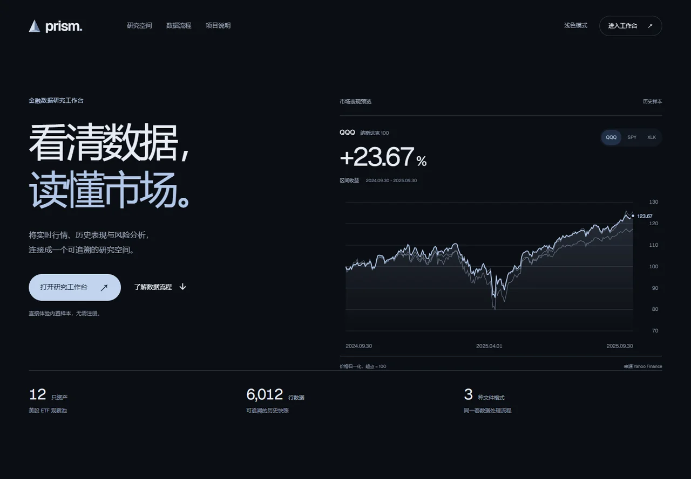

数据处理 / 交互可视化
Prism Market金融数据研究工作台
为金融数据研究者连接文件与行情接入、质量校验、收益风险计算和交互看板，让研究结论可以回到原始数据与计算过程复核。

业务问题
金融研究数据来自不同文件与行情接口，字段差异、日期缺行和复权口径都会影响比较结果。研究者需要在共同时间区间分析资产，同时核对数据来源、质量问题和指标算法；实时价格的新鲜度也需要明确呈现。
系统架构
左右滑动查看图中细节，也可打开完整图。
我的做法
我把数据接入、标准化、查询计算与交互页面串成完整流程：历史链路保留原始文件、哈希与质量记录，实时链路呈现源时间、接收时间和存储状态，让使用者能够沿着图表检查数据，再通过 SQL、CSV 与本地复核页面核对结果。
数据流程
从原始文件到研究结果
- 接入与映射。本地支持 CSV、Excel、Parquet 导入，识别字段后由人确认代码、日期、价格及市场、币种、复权口径，保留原始文件与 SHA-256 哈希。
- 质量校验。检查重复证券日期、非法价格和 OHLC 关系，生成标准化 Parquet。资产比较使用共同有效区间，中间缺行不静默填补。
- 查询与计算。DuckDB 执行参数化 SQL 和日、周、月重采样，Pandas / NumPy 计算收益、最大回撤、年化波动、基准收益差与相关性。
- 联动与复核。资产、基准和日期联动更新趋势、K 线与风险图表；查看来源、质量问题及 SQL，导出研究区间行情，并在本地 Streamlit 页面复核指标。
实时行情与增量更新
后端共享公开 WebSocket 连接，解码 Protobuf 后校验价格与时间，去重并隔离乱序报价。每 2 秒通过 SSE 推送网页，每 10 秒批量写入分钟 Parquet 分片，供 DuckDB 查询和 CSV 导出。
断线后重新连接并订阅观察池，落盘失败保留重试与错误状态；网页更新保留图表缩放和键盘焦点。源时间、接收时间、最后报价与连接状态分别显示，休市时也能识别旧值。
我的个人贡献
我负责将金融研究需求拆成数据接入、质量规则、指标口径、API 和页面交互，围绕字段映射、图表联动、实时状态与数据溯源推动实现和迭代，并完成项目介绍首页、公开只读演示与本地指标复核入口。
设计取舍
历史与实时分别解释
历史研究使用固定复权快照，实时报价保留原始未复权价格，两者分别展示与计算。分钟收盘快照与流报价采样也保持独立，避免将稀疏采样解释为完整逐笔成交或 OHLCV。
让指标口径可以被检查
区间收益为末价 / 初价 − 1；最大回撤取价格 / 此前峰值 − 1 的区间最小值；年化波动使用有效相邻日收益的样本标准差乘以 √252。缺行及其下一日期不产生日收益，相关性要求至少三个共同有效样本。
界面同时保留来源、字段映射、文件哈希、研究参数和 SQL，使图表展示与指标解释对应到同一份数据。
技术与交付选择
使用 Python、Pandas / NumPy 处理数据，以 Parquet 保留标准快照，DuckDB 完成文件查询与聚合，适合当前本地单用户研究场景。FastAPI 同源提供网页、接口与 SSE，前端使用 ECharts 和 TradingView Lightweight Charts，Streamlit 提供本地复核界面。
成果与项目限制
已形成可访问的项目首页、历史研究和实时观察工作台，走通接入、校验、计算、溯源与导出。内置真实历史样本包含 12 只美股 ETF、6,012 行，覆盖 2023-10-02 至 2025-09-30；来源为 Yahoo Finance，合成异常样例单独标识。
公开演示只读，文件导入与 Streamlit 复核需运行本地版，源码仓库为私有。历史快照不会自动更新到今天；公开行情源的时延与覆盖无保证，Render Free 会休眠，重启或部署可能丢失临时采样数据。当前未实现账户持仓绩效、交易执行或策略回测。